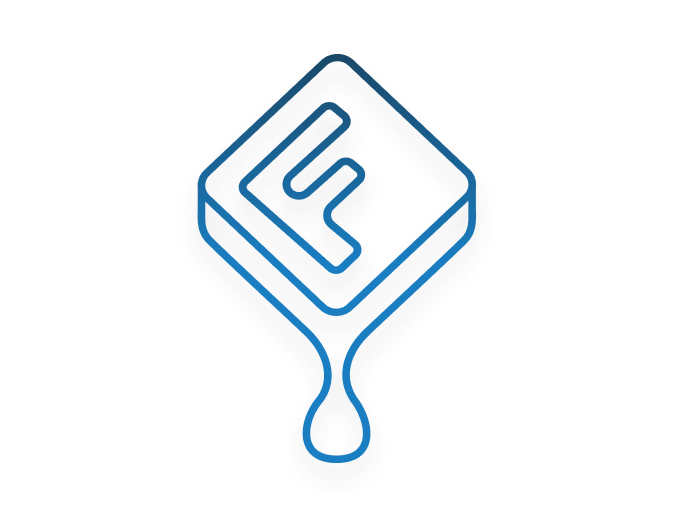
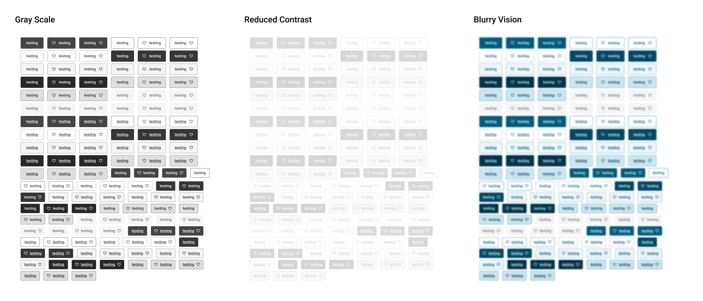
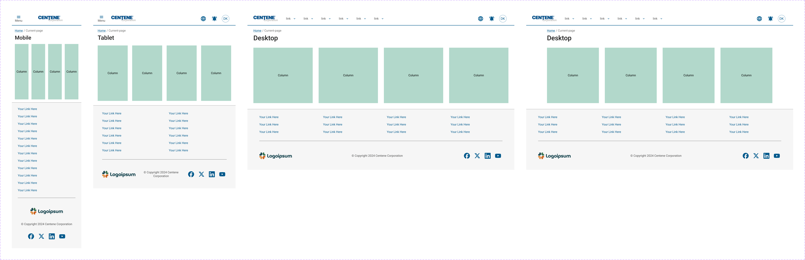
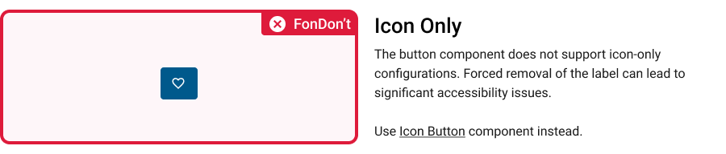

Case Study: Fondue Design System
2023–Present | Centene Corporation | Design Systems | Design Systems Lead
When I joined the Fondue design system, the project was struggling with disorganization, inconsistent components, and a lack of collaboration across teams. The design system had little structure, and its adoption was minimal due to the absence of clear processes and communication. Designers faced delays in support, particularly with accessibility, and the system was not aligned with the development team's needs. My role was to play a critical part in addressing these challenges by improving processes, rebuilding relationships, and integrating accessibility. Through these efforts, Fondue has become a cohesive, well-documented, and inclusive design system that plays a central role in the organization’s design and development efforts.
Improving Processes
The first challenge I tackled was the lack of clear processes within the design system. The Figma library was disorganized, components were incomplete, and documentation was sparse, making it difficult for teams to use the system effectively. I quickly introduced structure by establishing standardized workflows, setting clear expectations, and improving documentation.
To bring order to the Figma library, I reorganized the components to make them easy to find and use. Each component was documented with detailed usage guidelines, customization options, and examples to ensure designers could confidently implement them in their work. I also created resources like video tutorials and live Q&A sessions to support designers in using the system and reducing the wait time for support.
Additionally, I introduced office hours and direct support channels, which allowed designers to get quick assistance and helped eliminate bottlenecks in the adoption process. These changes significantly improved efficiency, allowing the design system to become more usable and accessible to all teams.
Rebuilding Relationships
A critical aspect of my role in Fondue was rebuilding relationships, particularly with key stakeholders such as the new product owner and development lead. When I arrived, there was a lack of alignment between design, development, and product teams, leading to confusion and inefficiencies in how the system was being implemented. There was also significant mistrust between the design and accessibility teams, which hindered collaboration.
I worked closely with the newly appointed product owner and development lead to establish a shared vision for the design system. The product owner’s involvement was essential for ensuring that the system’s priorities were aligned with broader product goals, while the development lead played a crucial role in shaping the technical direction of the system. Together, we held regular meetings to ensure alignment and address concerns from all sides, ultimately leading to stronger collaboration and a clearer sense of purpose.
With the development lead, I worked to streamline communication between design and development teams. Early in the process, there were significant challenges around component implementation and quality control. By fostering open communication and emphasizing the importance of collaboration, we created a more unified approach to the system’s development. We were able to identify potential issues early on and solve them collaboratively, ensuring that the components were not only well-designed but also easily implementable by developers.
Additionally, I worked hard to repair the relationship with the accessibility team. This team had previously felt sidelined, and their concerns were not always addressed within the system. I made it a priority to include them early in the decision-making process, ensuring that accessibility was integrated into the design from the start. Through regular check-ins and shared goals, I was able to build trust with the accessibility team, which made it easier to meet WCAG standards and provide designers with the tools they needed to create inclusive designs.
These efforts to rebuild relationships were critical to the success of Fondue. By aligning all stakeholders around a shared vision, I was able to create a more collaborative and transparent environment, which led to smoother implementation and better outcomes across the organization.
Integrating Accessibility
When I joined Fondue, accessibility had not been adequately prioritized, which created significant gaps in the system. I knew that for the system to be truly effective and inclusive, accessibility had to be a core focus. I worked closely with the accessibility team to integrate accessibility standards into the system and ensure that all components were tested against WCAG guidelines.
I conducted internal audits, created accessibility checklists, and developed training programs for designers to ensure that accessibility considerations were at the forefront of the design process. These efforts resulted in components that were not only more inclusive but also easier for designers to implement, ensuring that accessibility became an integral part of the system rather than an afterthought.

Improving Documentation and Knowledge Sharing
Another area where I made a significant impact was in improving the documentation and knowledge-sharing processes. The previous documentation was disorganized and hard to navigate, which made it difficult for teams to use the system effectively. I overhauled the documentation to create a more structured, comprehensive resource for all teams.
Each component was documented with clear guidelines, usage examples, and customization options. I also created additional resources like video tutorials and live Q&A sessions to help onboard new users and provide ongoing support. This shift made the system more accessible, enabling both designers and developers to work with the system more efficiently.

Additionally, by fostering a culture of knowledge sharing, I ensured that designers and developers had the resources they needed to collaborate more effectively. Regular feedback loops and shared learnings helped ensure that the system continued to improve and evolve to meet the needs of the teams using it.

Lessons Learned
Through my work on Fondue, I gained several important insights that are crucial for the success of a design system:
- Clear Processes and Documentation Are Essential: A design system without clear processes and well-organized documentation will struggle to gain adoption. By introducing structure and clarity, I was able to make the system more usable and efficient.
- Collaboration and Relationship-Building Are Key: Successful design systems are built on strong relationships. By working closely with the product owner, development lead, and accessibility team, I was able to align all stakeholders around a shared vision and build trust, which led to better outcomes.
- Accessibility Must Be Embedded in the Process: Accessibility is not an afterthought—it’s a core part of the design process. By integrating accessibility into the system from the beginning, I ensured that the system was inclusive and usable for all users.
- Ongoing Improvement Is Crucial: A design system is not a static asset; it needs continuous feedback and improvement. By creating a culture of knowledge sharing and regular feedback, I was able to help Fondue evolve and meet the needs of the organization.
Transform's success was built on a foundation of scalable processes, accessibility, and strong cross-functional relationships. From a single-contributor project to an enterprise-wide solution, it has become a vital tool that enhances productivity, improves user experience, and ensures design consistency across the organization. The lessons learned from this journey continue to inform how we approach design systems and collaboration at scale.
Conclusion
My involvement in the transformation of the Fondue design system was both challenging and rewarding. By improving processes, rebuilding relationships, and ensuring that accessibility was prioritized, I played a critical role in shaping a design system that is now a central part of the organization’s design and development efforts. The lessons I learned from this project, along with my previous experience with Transform, continue to guide my approach to building design systems that are not only efficient but also inclusive and sustainable.
Fondue is now a robust, well-supported, and trusted system, thanks to the improvements I made in process, collaboration, and accessibility. By rebuilding relationships with key stakeholders, including the product owner and development lead, I was able to align the entire team around a shared vision and create a design system that truly meets the needs of the organization.